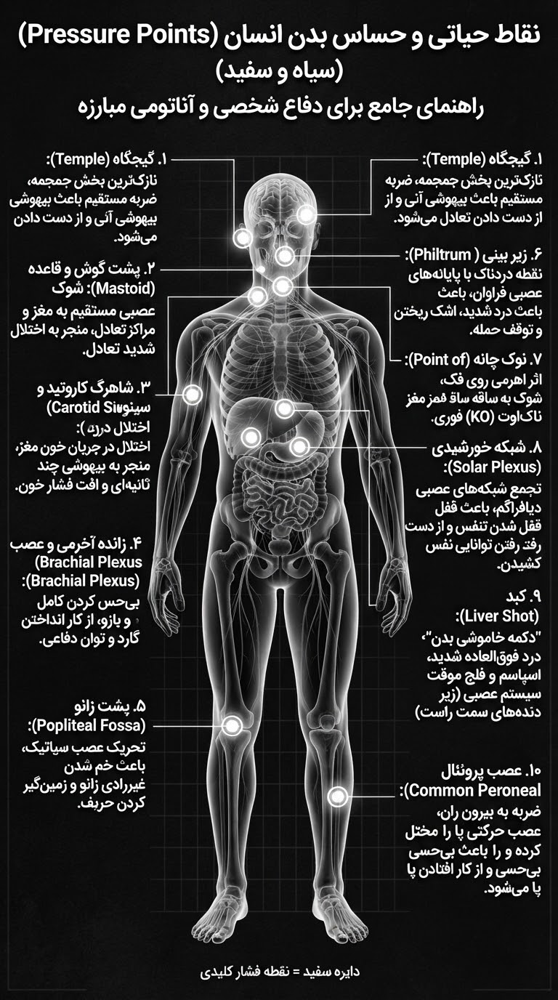

مرجع تخصصی نقاط عصبی و عروقی برای افت ناگهانی قدرت حریف یا ناکاوت (KO)

مرکز تنظیم فشار خون مغز است. ضربه دقیق (با تیغه دست یا ساعد) یا فشار ناگهانی به این ناحیه، جریان خون مغز را مختل کرده و باعث سرگیجه شدید، افت فشار و بیهوشی چند ثانیهای میشود.
چانه مثل یک اهرم عمل میکند. ضربه چرخشی (هوک یا آپرکات) سر را ناگهان میچرخاند، مایع مغزی را تکان میدهد و به ساقه مغز شوک وارد میکند که منجر به بیهوشی فوری میشود.
«دکمه خاموشی بدن» در مبارزات حرفهای. مشت یا لگد سنگین به کبد باعث اسپاسم شدید، افت ناگهانی فشار خون و فلج موقت سیستم عصبی میشود؛ حریف بدون اینکه بیهوش شود روی زمین مچاله میگردد.
محل تجمع شبکههای عصبی دیافراگم است. ضربه مستقیم به این نقطه باعث قفل شدن دیافراگم میشود؛ حریف برای چند ثانیه قادر به نفس کشیدن نیست و تمام قدرت تهاجمیاش از بین میرود.
نازکترین بخش جمجمه که شریانهای مهم مغزی زیر آن قرار دارند. ضربه به این ناحیه تعادل گوش میانی و مغز را به هم میریزد و حریف را در جا نقش بر زمین میکند.
ضربه لوکیک (Low Kick) یا زانو به این عصب حرکتی، باعث بیحسی و «خشک شدن» ناگهانی عضلات پا میشود. حریف تعادل خود را از دست داده و قدرت مانور و ضربه زدن را از دست میدهد.
عصب صورت و مراکز تعادل در این بخش بسیار سطحی هستند. ضربه ناگهانی یا فشار شدید در این نقطه یک شوک عصبی مستقیم به مغز میفرستد و تعادل حریف را کاملاً مختل میکند.
پر از پایانههای عصبی بسیار حساس است. ضربه رو به بالا با کف دست یا انگشتان به این نقطه باعث درد شدید، اشک ریختن غیرارادی چشمها و توقف آنی هجوم حریف میشود.
ضربه سنگین (مثل ساعد یا لگد) به عصب شبکه بازویی باعث میشود دست حریف به طور موقت بیحس و سنگین شود، به طوری که دیگر توان بالا نگه داشتن گارد یا مشت زدن نداشته باشد.
ضربه به این ناحیه رباطها و عصب سیاتیک را تحریک کرده و باعث خم شدن غیرارادی زانو میشود. حریف بلافاصله ارتفاع کم میکند و تعادلش از بین میرود.